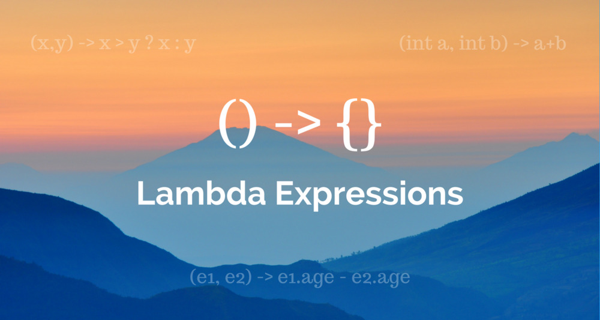

在本号之前写过的一些文章中，笔者使用了lambda表达式语法，一些读者反映说代码看不懂。本以为java 13都已经出了，java 8中最重要特性lambda表达式大家应该都掌握了，实际上还是存在大量的程序员没有使用java8，还有的使用了java8也不会使用lambda表达式。所以，写这篇文章还是有必要的，如果您觉得我的文章对您有帮助，期待您的关注。
Lambda表达式是Java 8最流行最常用的功能特性。它将函数式编程概念引入Java，函数式编程的好处在于可以帮助我们节省大量的代码，非常方便易用，能够大幅度的提高我们的编码效率。在本文中，我们将介绍lambda表达式是什么，并将传统的java代码写法转换为lambda表达式写法，大家可以通过示例了解lambda表达式都对传统代码做了哪些简化。
首先，我们要明白lambda表达式在表达什么？答案就是lambda表达式表达接口函数的实现，所以我们有必要做一下准备工作。在传统的开发方式下，我们不习惯将代码块传递给函数。我们所有的行为定义代码都封装在方法体内，并通过对象引用执行，就像使用下面的代码一样：
public class LambdaDemo {
//函数定义
public void printSomething(String something) {
System.out.println(something);
}
//通过创建对象调用函数
public static void main(String[] args) {
LambdaDemo demo = new LambdaDemo();
String something = "I am learning Lambda";
demo.printSomething(something);
}
}大家应该对上面的代码的开发方式不感到陌生，这是经典OOP的实现样式。下面我们对上面的代码做一个修改，创建一个功能接口，并对该接口定义抽象方法。
public class LambdaDemo {
//抽象功能接口
interface Printer {
void print(String val);
}
//通过参数传递功能接口
public void printSomething(String something, Printer printer) {
printer.print(something);
}
}
在上述实现中，Printer接口负责打印行为，可以是控制台打印，也可以是其他的打印行为。方法printSomething不再定义行为，而是执行Printer定义的行为，这样的设计更加灵活。代码如下：
public static void main(String[] args) {
LambdaDemo demo = new LambdaDemo();
String something = "I am using a Functional interface";
//实现Printer接口
Printer printer = new Printer() {
@Override
public void print(String val) {
//控制台打印
System.out.println(val);
}
};
demo.printSomething(something, printer);
}至此我们都尚未使用lambda表达式。我们仅创建了Printer接口的具体实现，并将其传递给printSomething方法。
关于lambda表达式概念后文再说，我们先来学习一下lambda表达式的语法：
（param1，param2，param3 ...，paramN）- > { //代码块； }现在，我们使用lambda表达式重构一下第一小节中的代码
public static void main(String[] args) {
LambdaDemo demo = new LambdaDemo();
String something = "I am learning Lambda";
//实现Printer接口（请关注下面这行lambda表达式代码）
Printer printer = (String toPrint)->{System.out.println(toPrint);};
//调用接口打印
demo.printSomething(something, printer);
}lambda表达式使我们代码更简洁。实际上使用lambda表达式在性能和多核处理还有更多的好处，但是只有在理解java8 Streams API之后它们才有意义，因此不在本文讨论范围之内（本号之前的文章都有介绍）。
对比传统java代码的实现方式，代码量是不是减少了很多？但这仍然不是最简的实现方式，我们一步一步来。
Printer printer = (String toPrint)->{System.out.println(toPrint);};
//简化：去掉参数类型
Printer printer = (toPrint)->{System.out.println(toPrint);};
//简化：去掉参数括号
Printer printer = toPrint->{System.out.println(toPrint);};
//简化：去掉函数体花括号
Printer printer = toPrint->System.out.println(toPrint);如果我们的接口方法定义不带任何参数，则可以用空括号替换：
（）-> System.out.println("anything you wan to print")那么，我们最终通过lambda表达式，简化完成的代码是什么样的呢？庐山真面目：
public static void main(String[] args) {
LambdaDemo demo = new LambdaDemo();
String something="I am Lambda";
//关注下面的这行代码
demo.printSomething(something, toPrint -> System.out.println(toPrint));
}我们使用lambda表达式内联为函数调用参数，将最初main方法的9行代码下降到只有3行。但笔者要说，这仍然不是lambda表达式可以完成的最终极代码简化方式，当你学习了java8 Stream API结合lambda表达式使用，你会发现你的编码效率将大幅度提高！
lambda表达式表达的是接口函数，箭头左侧是函数参数，箭头右侧是函数体。函数的参数类型和返回值类型都可以省略，程序会根据接口定义的上下文自动确定数据类型。
在这篇文章中，我们对Java中的Lambda表达式进行了详尽的介绍，并了解了如何使用它们来提高接口实现效率和质量。请关注本号更多有关内容，Stream API与Collections框架一起使用时为Lambda提供了更多优势。